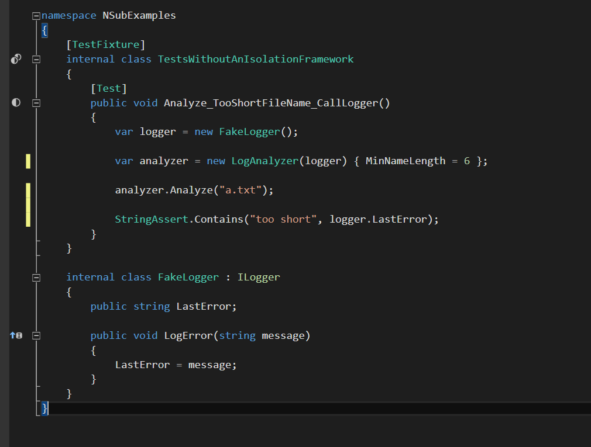
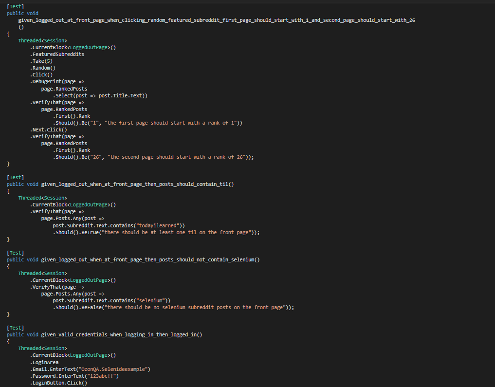

Методы разработки качественного и
"чистого" кода
Новиков Иван
Новиков Иван
@jonny
Моя позиция может не совпадать с позицией компаний, в которых я работаю
Кто я?

Novikov Ivan
Developer Advocate at Amiforus
Agenda
TDD
РЕФАКТОРИНГ
АРХИТЕКТУРА
ПРОЦЕССЫ
ПРИМЕРЫ НА C#
ДИАГНОЗ И ЗАКЛЮЧЕНИЕ
Q&A
TDD?
TDD...
будем дальше считать академическим видом программирования
SUT, SUD, .... почему все-таки TDD - огромный вклад в развитие инженерии в целом?
РЕФАКТОРИНГ
не должен изменять семантику
должен улучшать качество
РЕФАКТОРИНГ
не панацея
стоимость, необходимость
АРХИТЕКТУРА
Несовершенная архитектура
непредвиденные изменения
существенные изменения
REFACTOR!
непредвиденные изменения
REBUILD!
существенные изменения
РЕФАКТОРИНГ ТРЕБУЕТ АНАЛИЗА
Рефактори СВОЁ!
хлам от рефакторинга останется хламом (GIGO)
никакое его количество не спасет дефектную архитектуру
Rebuild
Удачи!
ПРОЦЕССЫ
РАЗРАБОТКА, управляемая тестами
полноценный метод разработки ПО
Test First Development
create test
modify: code the simple thing
refactor
"Make it work. Make it right. Make it fast."
Kent Beck

Test Driven Development
create test
check test is failed
modify: code the simple thing
ensure test is passed
continuous refactor (unify)
"Лондонская школа TDD"
моки как средство унификации проектирования ПО
Реальность

Code example

О спецификациях (MSpec)

Основные принципы
Простота (KISS)
"Чистый" код
Не делай то, что сейчас не используешь (YAGNI)
Attention
Будьте скептиком
Разработку, управляемую тестами стоит попробовать
Моки необходимо использовать
ТОЛЬКО там, где они действительно нужны
и еще...
Где меня обманули
тесты - это не все, что нужно для спецификации ПО
тест более специфичен, чем user story
поиски общих правил, нет рецепта генерации спецификации по тестам
Почему все-таки классная штука?
каждый новый код должен сопровождаться тестами
экстремальный вариант хороший способ заставить себя сделать это
Немного кода
Почему многие ВООБЩЕ не пишут тесты?
- "Зачем проверять только состояния?"
- "Это отнимет всё время"
- "Их невозможно поддерживать"
Почему ПИШУТ и даже разрабатывают через тесты?
У них есть рецепт, который другие не знают?
Проблемы заглушек

Isolation Framework
Используя NSubstitute https://github.com/nsubstitute/NSubstitute
код с предыдущего слайда превращается в

Mocking Framework
Moq https://github.com/Moq/moq4

С блэкджеком и... девочками
IoC + Nancy https://github.com/NancyFx/Nancy

О необходимости тестирования

Тесты - тоже искусство
Selenium WebDriver http://seleniumhq.org

Вырастающая сложность

Поддержка
Проектирование и программирование -
виды человеческой деятельности;
стоит об этом забыть – и все пропало.
Бьярн Страуструп, 1991
Что начать читать завтра?
Test-Driven development: By example (Kent Beck, 2003)
Исскуство автономного тестирования (Рой Ошервуд):
&
Что посмотреть вместо сериала?
Norway Developers Conference (NDC)
Q&A
Ссылка на презентацию: http://j.mp/quality-evolve